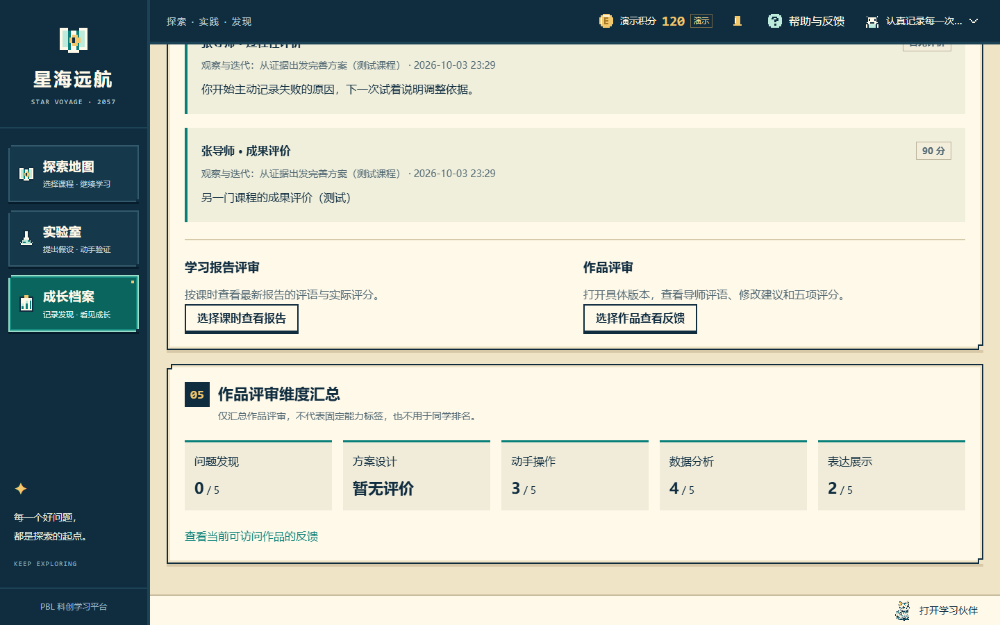
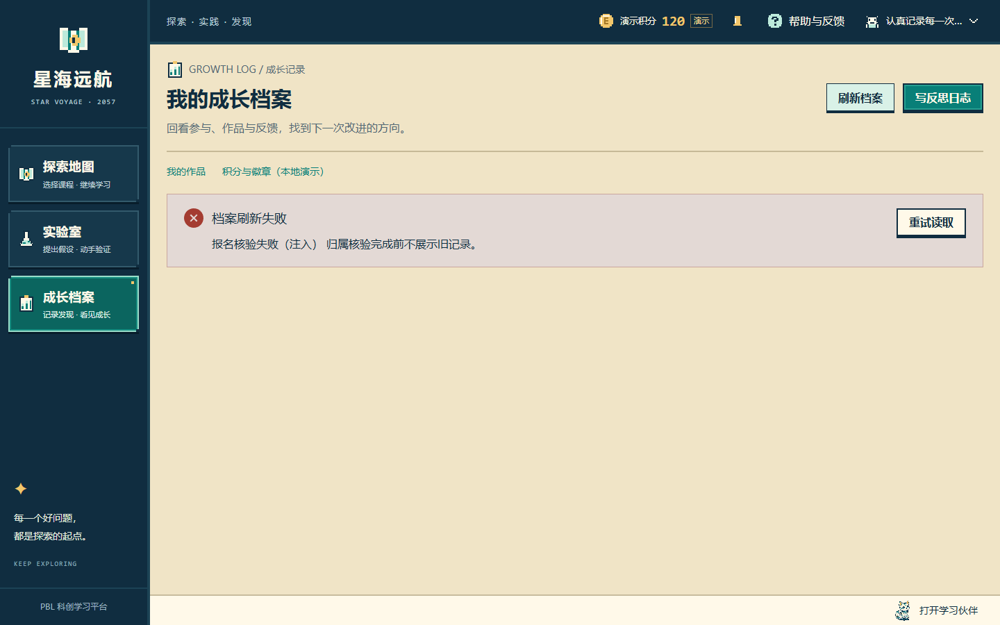

档案概览 · 首屏 · 真实 API
隔离账号的两门同名课程按 ID 区分；缺失学校、班级如实显示。桌面首屏同时看到概况与课程记录。
沿用「晴空观测站」。56 张本地 Edge 实际截图，使用隔离临时 SQLite 与合成教学内容；不代表正式课程，未改动开发数据库或历史截图。真实 API、故障注入和汇总契约边界分别标注。首屏从顶部截取，内容区为操作、滚动后的视口；所有图片均未裁切或修图。
交付说明 · 第四轮首页与地图隔离账号的两门同名课程按 ID 区分；缺失学校、班级如实显示。桌面首屏同时看到概况与课程记录。
四个项目、一次迭代；历史退回版已修改，最新退回版保留反馈和修改入口。
课程范围查询、搜索、筛选、版本、真实提交时间与反馈入口。作品使用通用图标。
临时库加入同一项目的十个合成版本。十五条提交仍是四个项目；第二页可查看历史版。
选择课程和课时后才加载学习包。最新报告第 2 版，真实分数 0 保留；进入原学习页报告与评审阶段。
区分尚未选择、尚未提交和未解锁，没有新增学习进度。
只阻断所选课时读取，失败不冒充未提交；重试和更换课时可用，迟到响应被丢弃。
课程过程/成果评价、报告评审与作品评审分开；未评分显示暂无评价。
原汇总包含未发布课程作品，明确暂不可汇总；有效作品仍可逐件查看反馈。
受控返回数值 0 与 null；用于展示边界验证。原 SQL 五维评分不接受新写入 0，不代表正式评分数据。

按作品 ID 去重，保留个人导师记录；无对象关联的系统文本隐藏详情并说明原因。
原四字段，课程必填、课时可选。文字仅在本页保留，提交成功后才保存到服务端。
实际通过键盘提交，随后在真实档案读取到新记录。小智不遮挡操作。
当天反思按北京时间由服务器计数，收到原限额错误，四个输入均保留。
临时库撤回所选课程，课程和课时关联清除；已有文字不丢失，提示重新选择。
隔离账号报名移除，提交禁用并说明原因。
档案摘要 503，课程范围仍核验成功；统计显示破折号，仍可按需浏览课程报告。
报名映射读取失败，旧档案和统计停止显示，提供重试。

确认撤回或移除后，相关作品、反思、评价和统计及时清除。
课程参与不等于成果，项目、迭代、反思、评价为真实零计数。